Captains Log 0003
August 9, 2025
winamp + bash + curl
I found the old legacy winamp.exe online [version 5.666 from 2013] and got it running through wine. Also found an awesome website with loads of the old skins.For those who don't know winamp was basically a music player built for windows xp. I also found a cool github script that
pulls your liked song/playlists from spotify [text file not the actual music files] and then the script downloads the tracks as well as all the appropriate metadata like album artwork etc. from youtube. I have been interested in having more physically owned media so this has been awesome.
I still pay for spotify right now as my phone could never hold my thousands of liked songs but we will see in the future. Spotifys kind of a shitty business anyways.
Anyways check out these sick fucking skins I got for winamp
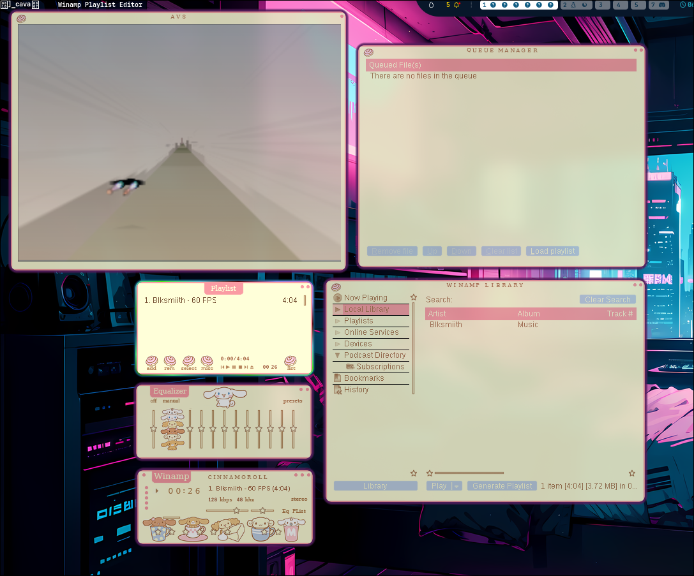
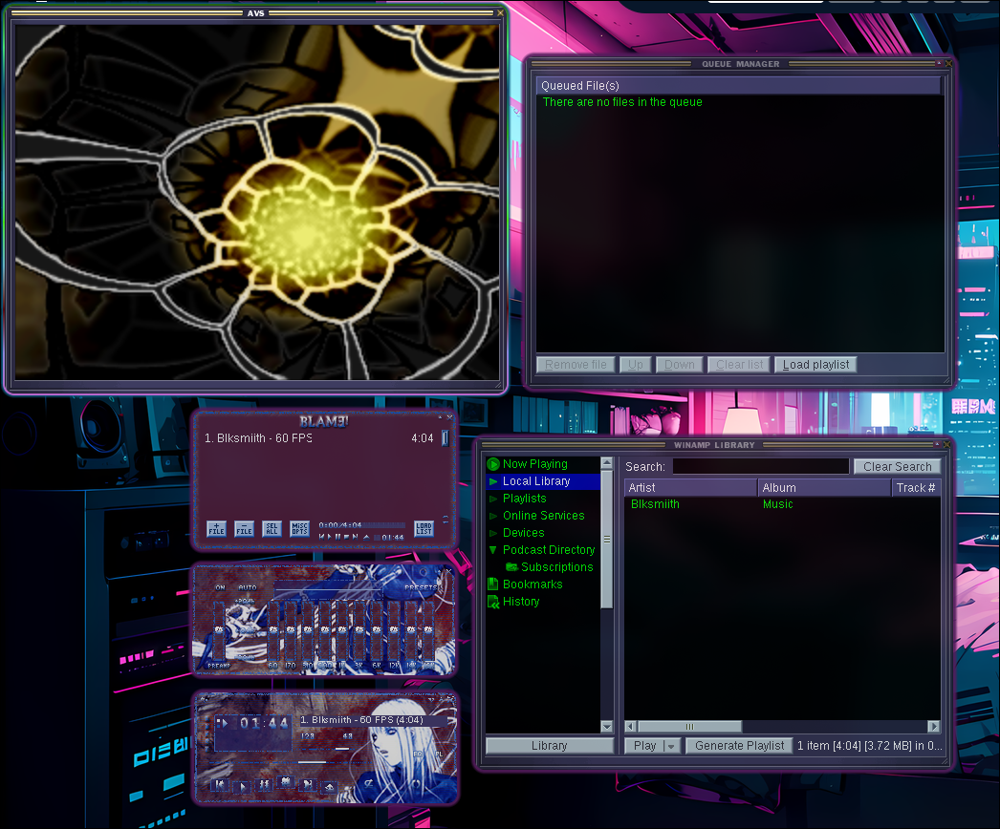
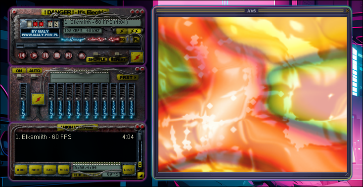
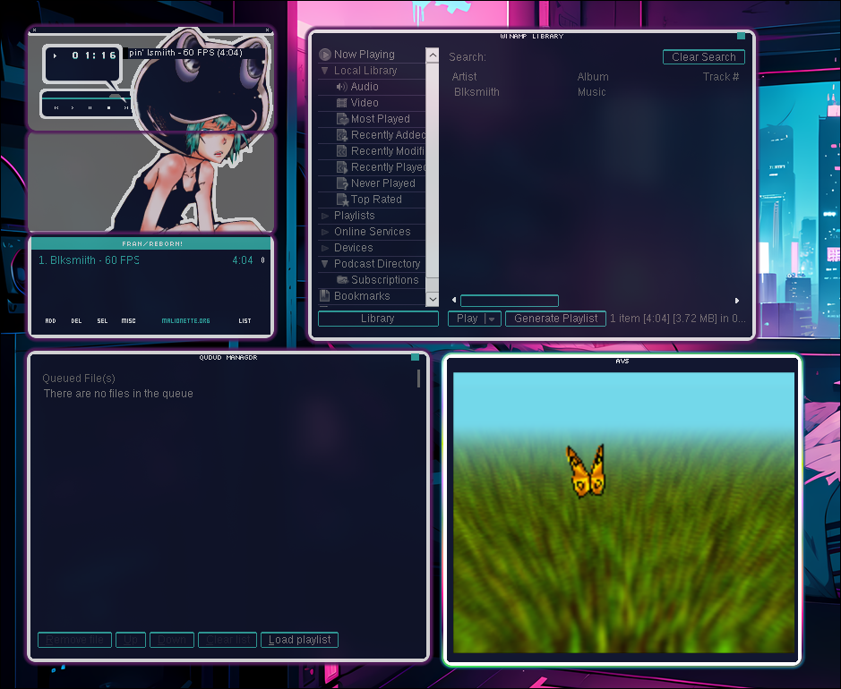
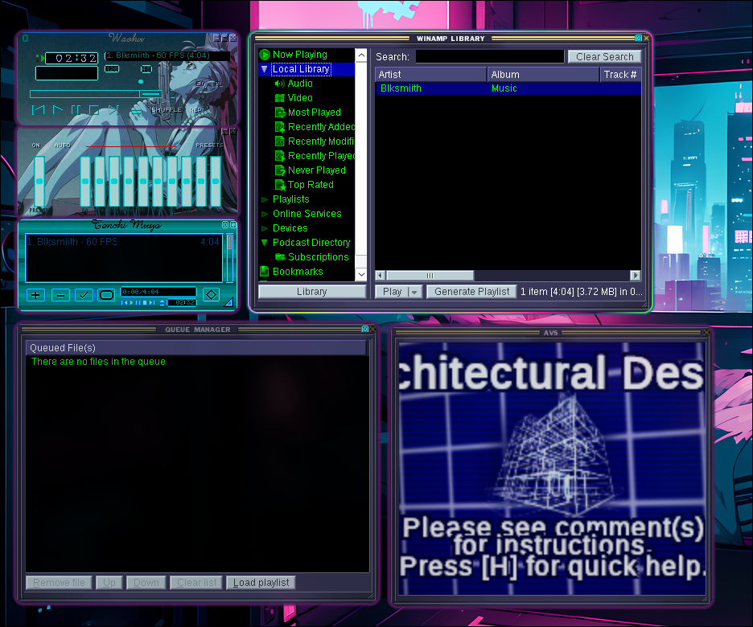
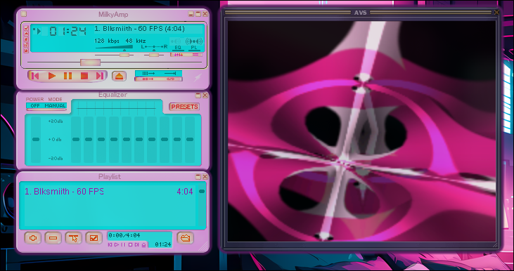
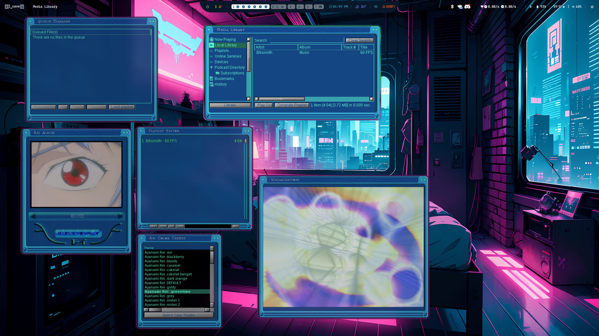
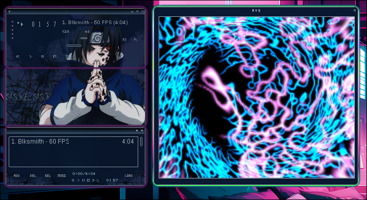
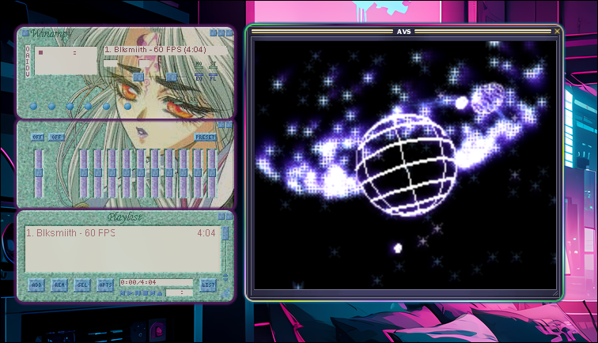
Why did they ever stop including the visualizers in media players. like windows media player used to have as well. Everyone decided simple UI and boring plane jane colours was the way to go, lots of software ends up feeling the same. Also I can't think of any modern software that even lets you customize the look of the UI like these old programs do. 2013 software still runs perfectly fine in 2025 though so fuck em
I also wrote a simple bash script called music.sh and added it to /usr/local/bin so I can call it from the terminal anywhere.
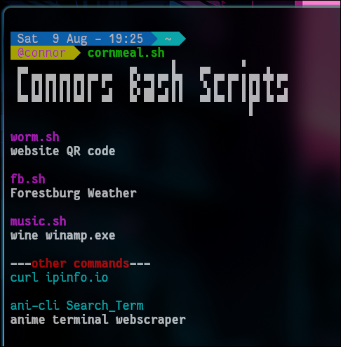
All it does is echo the terminal command to launch wine+winamp from it's folder because it was long and annoying to type out.
I have a few other similar bash scripts like one to curl weather data and one to print a QR code for this website.
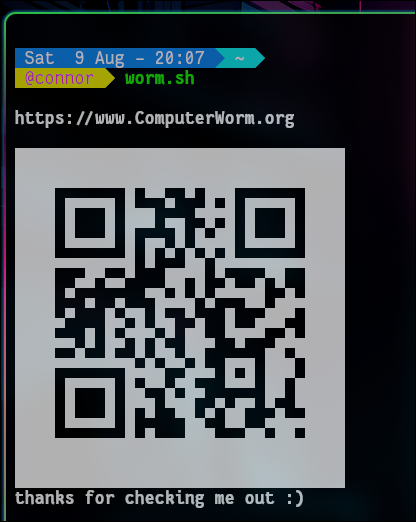
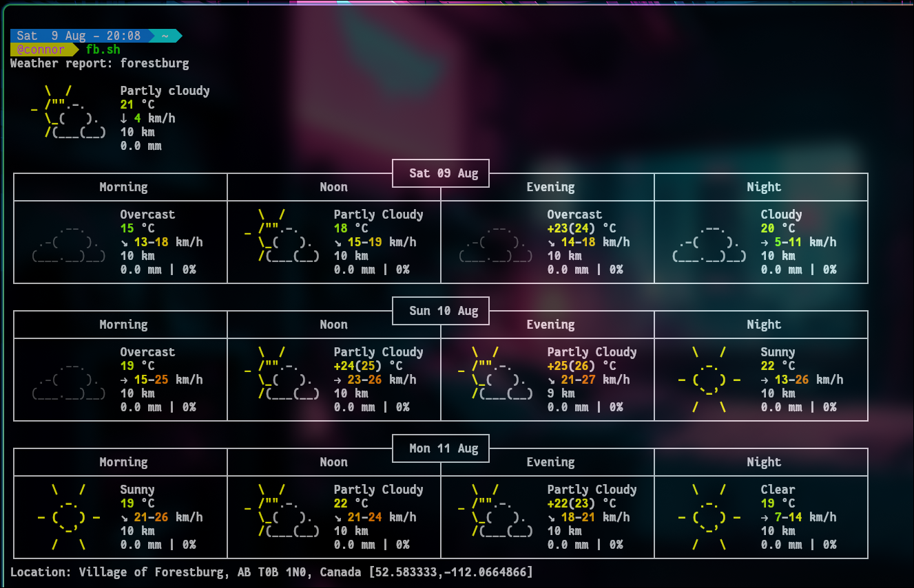
Bash scripting is actually so insane. Very hard to read for someone who
is used to python.
I mean just look at this line of bash code...insane...
awk '{printf "\033[1;32m%s\t\033[00m\033[1;33m%s\t\033[00m\033[1;34m%s\033[00m\n", $1, $2, $3;}' cornmeal.txt
All that does is pulls data from a .txt file and prints in to the terminal, formated to be put into columns and colour coded by each column. The code looks like actual witchcraft lol.
But it is super cool and genuinely useful/time saving as well. And if I am to be so bold, perhaps even beautiful, I'd like to keep learning more #!
Also what designates a file as a bash script is
the opening characters #!. Which is refered to as a 'shebang!'. How fun is that